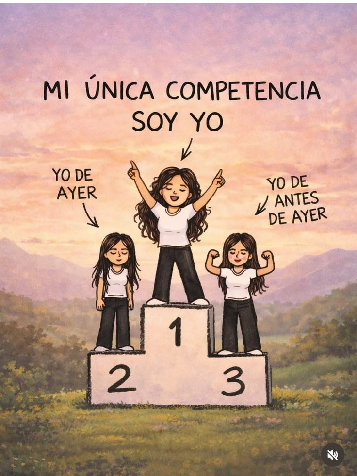

Mis aspiraciones a corto plazo están enfocadas en cumplir metas que me ayuden a mejorar día a día. Quiero organizar mejor mi tiempo, esforzarme en mis estudios y adquirir nuevos conocimientos que sean útiles para mi futuro. Lograr graduarme con honores y entrar a la universidad que estan en mis planes.
